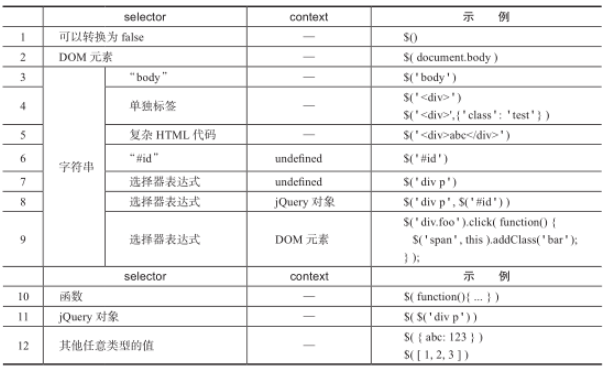
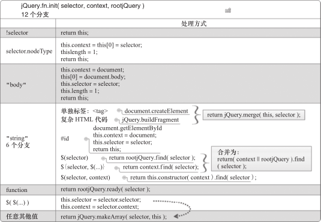

jQuery技术内幕笔记-3-jQuery.fn.init 源码解读
构造函数 jQuery.fn.init() 负责解析参数 selector 和 context 的类型，并执行相应的逻辑，最后返回 jQuery.fn.init() 的实例。参数 selector 和 context 共有 12 个有效分支。

参数 selector 和 context 的 12 个分支
定义 jQuery.fn.init( selector, context, rootjQuery )
相关代码如下所示：1
299 init: function( selector, context, rootjQuery ) {
100 var match, elem, ret, doc;
第 99 行：定义构造函数 jQuery.fn.init( selector, context, rootjQuery )，它接受 3 个参数：
- 参数 selector：可以是任意类型的值，但只有 undefined、DOM 元素、字符串、函数、jQuery 对象、普通 JavaScript 对象这几种类型是有效的，其他类型的值也可以接受但没有意义。
- 参数 context：可以不传入，或者传入 DOM 元素、jQuery 对象、普通 JavaScript 对象之一。
- 参数 rootjQuery：包含了 document 对象的 jQuery 对象，用于 document.getElementById() 查找失败、selector 是选择器表达式且未指定 context、selector 是函数的情况。rootjQuery 的定义和应用场景的代码如下所示：
1
2
3
4
5
6
7
8
9// document.getElementById() 查找失败
172 return rootjQuery.find( selector );
// selector 是选择器表达式且未指定 context
187 return ( context || rootjQuery ).find( selector );
// selector 是函数
198 return rootjQuery.ready( selector );
// 定义 rootjQuery
916 // All jQuery objects should point back to these
917 rootjQuery = jQuery(document);
参数 selector 可以转换为 false
参数 selector 可以转换为 false，例如是 undefined、空字符串、null 等，则直接返回 this，此时 this 是空 jQuery 对象，其属性 length 等于 0。1
2
3
4102 // Handle $(""), $(null), or $( undefined )
103 if ( !selector ) {
104 return this;
105 }
参数 selector 是 DOM 元素
如果参数 selector 有属性 nodeType，则认为 selector 是 DOM 元素，手动设置第一个元素和属性 context 指向该 DOM 元素 、 属性 length 为 1，然后返回包含了该 DOM 元素引用的jQuery 对象。1
2
3
4
5
6107 // Handle $(DOMElement)
108 if ( selector.nodeType ) {
109 this.context = this[0] = selector;
110 this.length = 1;
111 return this;
112 }
第 108 行：属性 nodeType 声明了文档树中节点的类型，例如，Element 节点的该属性值是 1，Text 节点是 3，Comment 节点是 9，Document 对象是 9，DocumentFragment 节点是 11。
参数 selector 是字符串“body”
如果参数 selector 是字符串“ body”，手动设置属性 context 指向 document 对象、第一个元素指向 body元素、属性 length 为 1，最后返回包含了 body 元素引用的 jQuery 对象。这里是对查找字符串“ body”的优化，因为文档树中只会存在一个 body 元素。1
2
3
4
5
6
7
8114 // The body element only exists once, optimize finding it
115 if ( selector === "body" && !context && document.body ) {
116 this.context = document;
117 this[0] = document.body;
118 this.selector = selector;
119 this.length = 1;
120 return this;
121 }
参数 selector 是其他字符串
如果参数 selector 是其他字符串，则先检测 selector 是 HTML 代码还是 #id。1
2
3
4
5
6
7
8
9123 // Handle HTML strings
124 if ( typeof selector === "string" ) {
125 // Are we dealing with HTML string or an ID?
126 if ( selector.charAt(0) === "<" && selector.charAt( selector.length - 1 ) === ">" && selector.length >= 3 ) {
127 // Assume that strings that start and end with <> are HTML and skip the regex check
128 match = [ null, selector, null ];
130 } else {
131 match = quickExpr.exec( selector );
132 }
第 126 ～ 128 行：如果参数 selector 以“ <”开头、以“ >”结尾，且长度大于等于 3，则假设这个字符串是 HTML 片段，跳过正则 quickExpr 的检查。注意这里仅仅是假设，并不一定表示它是真正合法的 HTML 代码，如“<div></p>”。
第 131 行：否则，用正则 quickExpr 检测参数 selector 是否是稍微复杂一些的 HTML 代码（如“abc<div>”）或 #id，匹配结果存放在数组 match 中。正则 quickExpr 的定义如下：1
2
339 // A simple way to check for HTML strings or ID strings
40 // Prioritize #id over <tag> to avoid XSS via location.hash (#9521)
41 quickExpr = /^(?:[^ # <]*(<[\w\W]+>)[^>]*$|#([\w\-]*)$)/,
正则 quickExpr 包含两个分组，依次匹配 HTML 代码和 id。如果匹配成功，则数组match 的第一个元素为参数 selector，第二个元素为匹配的 HTML 代码或 undefined，第三个元素为匹配的 id 或 undefined。1
2
3
4
5
6quickExpr.exec( '#target' ); // ["#target", undefined, "target"]
quickExpr.exec( '<div>' ); // ["<div>", "<div>", undefined]
quickExpr.exec( 'abc<div>' ); // ["abc<div>", "<div>", undefined]
quickExpr.exec( 'abc<div>abc#id' ); // ["abc<div>abc#id", "<div>", undefined]
quickExpr.exec( 'div' ); // null
quickExpr.exec( '<div><img></div>' ); // ["<div><img></div>", "<div><img></div>", undefined]
第 41 行第一个 # 的特殊之处在于，在 jQuery 1.6.3 和之后的版本中，为了避免基于 location.hash 的 XSS 攻击，于是在 quickExpr 中增加了 # 。
在 jQuery 1.6.3 和之后的版本中，quickExpr 匹配 selector 时如果遇到“ #”，则认为不是HTML 代码，而是 #id，然后尝试调用 document.getElementById() 查找与之匹配的元素。而在 jQuery 1.6.3 之前的版本中，则只检查左尖括号和右尖括号，如果匹配则认为是 HTML 代码，并尝试创建 DOM 元素，这可能会导致恶意的 XSS 攻击。
假设有下面的场景：
在应用代码中出现 $( location.hash )，即根据 location.hash 的值来执行不同的逻辑，而用户可以自行在浏览器地址栏中修改 hash 值为“ #<img src=/ onerror=alert(1)>”，并重新打开这个页面；此时 $( location.hash ) 在执行时变为 $('#<img src=/ onerror=alert(1)>')。在 jQuery1.6.3 之前，“ #<img src=/ onerror=alert(1)>”被认为是 HTML 代码并创建 img 元素，因为属性src 指向的图片地址并不存在，事件句柄 onerror 被执行并弹出 1。这样一来，攻击者就可以在事件句柄 onerror 中编写恶意的 JavaScript 代码，例如，读取用户 cookie、发起 Ajax 请求等。
关于jQuery XSS，更多信息可以访问：
参数 selector 是单独标签
如果参数 selector 是单独标签，则调用 document.createElement() 创建标签对应的 DOM 元素。1
2
3
4
5
6
7
8
9
10
11
12
13
14
15
16
17
18
19
20134 // Verify a match, and that no context was specified for #id
135 if ( match && (match[1] || !context) ) {
136
137 // HANDLE: $(html) -> $(array)
138 if ( match[1] ) {
139 context = context instanceof jQuery ? context[0] : context;
140 doc = ( context ? context.ownerDocument || context : document );
141
142 // If a single string is passed in and it's a single tag
143 // just do a createElement and skip the rest
144 ret = rsingleTag.exec( selector );
145
146 if ( ret ) {
147 if ( jQuery.isPlainObject( context ) ) {
148 selector = [ document.createElement( ret[1] ) ];
149 jQuery.fn.attr.call( selector, context, true );
150
151 } else {
152 selector = [ doc.createElement( ret[1] ) ];
153 }
第 135 行：检测正则 quickExpr 匹配参数 selector 的结果，如果 match[1] 不是 undefined，即参数 selector 是 HTML 代码，或者 match[2] 不是 undefined，即参数 selector 是 #id，并且未传入参数 context。这行代码利用布尔表达式的计算顺序，省略了对 match[2] 的判断，完整的表达式如下：if ( match && (match[1] || match[2] && !context) ) {
如果 match 不是 null 且 match[1] 是 undefined，那么此时 match[2] 必然不是 undefined，所以对 match[2] 的判断可以省略。
第 138 ～ 140 行：开始处理参数 selector 是 HTML 代码的情况，先修正 context、doc，然后用正则 rsingleTag 检测 HTML 代码是否是单独标签，匹配结果存放在数组 ret 中。正则rsingleTag 的定义如下：1
250 // Match a standalone tag
51 rsingleTag = /^<(\w+)\s*\/?>(?:<\/\1>)?$/,
正则 rsingleTag 包含一个分组“ (\w+)”，该分组中不包含左右尖括号、不能包含属性、可以自关闭或不关闭；“\1”指向匹配的第一个分组“(\w+)”。
第 146 ～ 153 行：如果数组 ret 不是 null，则认为参数 selector 是单独标签，调用 document.createElement() 创建标签对应的 DOM 元素；如果参数 context 是普通对象，则调用jQuery 方法 .attr() 并传入参数 context，同时把参数 ontext 中的属性、事件设置到新创建的DOM 元素上。
之所以把创建的 DOM 元素放入数组中，是为了在后面第 160 行方便地调用 jQuery.merge() 方法。方法 jQuery.merge() 用于合并两个数组的元素到第一个数组。
方法 .attr() 遇到特殊属性和事件类型属性时会执行同名的 jQuery 方法，方法 jQuery.isPlainObject() 用于检测对象是否是“纯粹”的对象，即用对象直接量 {} 或 new Object() 创建的对象。
参数 selector 是复杂 HTML 代码
如果参数 selector 是复杂 HTML 代码，则利用浏览器的 innerHTML 机制创建 DOM 元素。1
2
3
4
5
6155 } else {
156 ret = jQuery.buildFragment( [ match[1] ], [ doc ] );
157 selector = ( ret.cacheable ? jQuery.clone(ret.fragment):ret.fragment ).childNodes;
158 }
159
160 return jQuery.merge( this, selector );
第 156 行：创建过程由方法 jQuery.buildFragment() 和 jQuery.clean() 实现，方法 jQuery.buildFragment() 返回值的格式为：1
2
3
4{
fragment: 含有转换后的 DOM 元素的文档片段
cacheable: HTML 代码是否满足缓存条件
}
第 157 行：如果 HTML 代码满足缓存条件，则在使用转换后的 DOM 元素时，必须先复制一份再使用，否则可以直接使用。
第 160 行：将新创建的 DOM 元素数组合并到当前 jQuery 对象中并返回。
参数 selector 是“#id”，且未指定参数 context
如果参数 selector 是“ #id”，且未指定参数 context，则调用 document.getElementById()查找含有指定 id 属性的 DOM 元素。1
2
3
4
5
6
7
8
9
10
11
12
13
14
15
16
17
18
19
20
21
22162 // HANDLE: $("#id")
163 } else {
164 elem = document.getElementById( match[2] );
165
166 // Check parentNode to catch when Blackberry 4.6 returns
167 // nodes that are no longer in the document #6963
168 if ( elem && elem.parentNode ) {
169 // Handle the case where IE and Opera return items
170 // by name instead of ID
171 if ( elem.id !== match[2] ) {
172 return rootjQuery.find( selector );
173 }
174
175 // Otherwise, we inject the element directly into the jQuery object
176 this.length = 1;
177 this[0] = elem;
178 }
179
180 this.context = document;
181 this.selector = selector;
182 return this;
183 }
第 162 ～ 164 行：如果参数 selector 是“ #id”且未指定参数 context，则调用 document.getElementById() 查找含有指定 id 属性的 DOM 元素。
第 166 ～ 168 行：检查 parentNode 属性，因为 Blackberry 4.6 会返回已经不在文档中的DOM 节点。
第 169 ～ 173 行：如果所找到元素的属性 id 值与传入的值不相等，则调用 Sizzle 查找并返回一个含有选中元素的新 jQuery 对象。即使是 document.getElementById() 这样核心的方法也需要考虑浏览器兼容问题，在 IE 6、IE 7、某些版本的 Opera 中，可能会按属性 name 查找而不是 id。
第 175 ～ 182 行：如果所找到元素的属性 id 值与传入的值相等，则设置第一个元素、属性 length、context、selector，并返回当前 jQuery 对象。
参数 selector 是选择器表达式
1 | 185 // HANDLE: $(expr, $(...)) |
此时依然在字符串分支中，参数 selector 不是单独标签、复杂 HTML 代码、#id，而是选择器表达式。如果没有指定上下文，则执行 rootjQuery.find( selector )；如果指定了上下文，且上下文是 jQuery 对象，则执行 context.find( selector ) ；如果指定了上下文，但上下文不是jQuery 对象，则执行 this.constructor( context ).find( selector )，即先创建一个包含了 context 的jQuery 对象，然后在该 jQuery 对象上调用方法 .find()。
参数 selector 是函数
1 | 195 // HANDLE: $(function) |
第 197 ～ 199 行：如果参数 selector 是函数，则认为是绑定 ready 事件。从第 198 行代码可以看出 $( function ) 是 $( document ).ready( function ) 的简写。
参数 selector 是 jQuery 对象
1 | 201 if ( selector.selector !== undefined ) { |
第 201 ～ 204 行：如果参数 selector 含有属性 selector，则认为它是 jQuery 对象，将会复制它的属性 selector 和 context。而且在其后的第 206 行会把参数 selector 中包含的选中元素引用，全部复制到当前 jQuery 对象中
参数 selector 是任意其他值
1 | 206 return jQuery.makeArray( selector, this ); |
第 206 行：如果 selector 是数组或伪数组（如 jQuery 对象），则都添加到当前 jQuery 对象中；
如果 selector 是 JavaScript 对象，则作为第一个元素放入当前 jQuery 对象中；
如果是其他类型的值，则作为第一个元素放入当前 jQuery 对象中。最后返回当前 jQuery 对象。
小结
方法 jQuery.fn.init( selector, context, rootjQuery ) 的 12 分支相关的判断和执行过程可以整理为图：

jQuery.fn.init( selector, context, rootjQuery ) 的 12 个分支
本系列笔记来自《jQuery技术内幕》一书中的部分内容。注意：其内的jQuery版本为1.7.1，后面的版本也许在一些方法和功能模块上有修改，了解其思想即可，但不可想当然的直接认定。